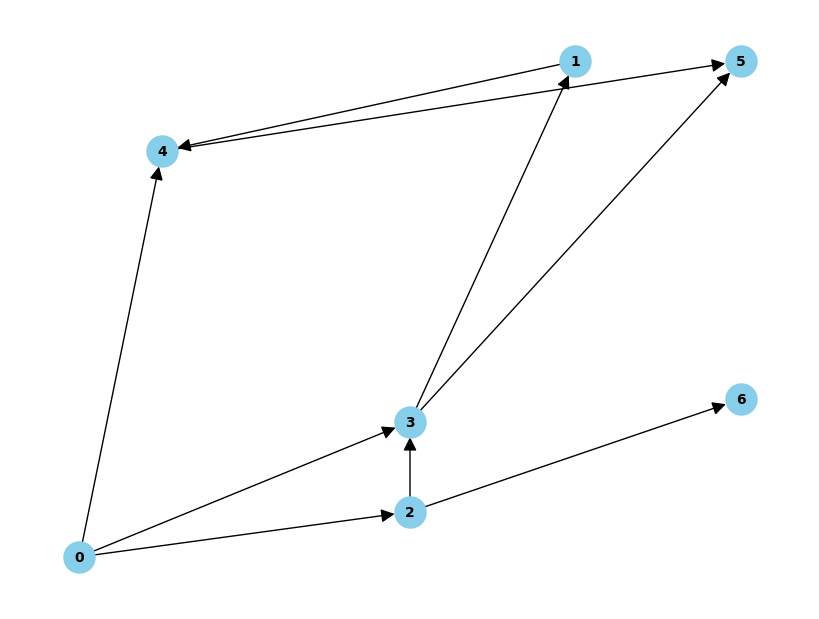
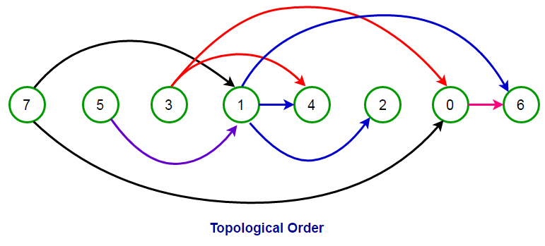

Theorical Explanation#
Important Aspects of the Project#
DAG (Directed Acyclic Graph):#
Khans Topological order
Neural Networks#
Backward propagation
Forward propagation
Genetic Algorithm#
Genotype
Fenotype
Mutation
Selection
DAG#
Un DAG (Directed Acyclic Graph, o Grafo Dirigido Acíclico) es una estructura matemática que consta de nodos conectados por aristas (o enlaces), donde cada arista tiene una dirección específica y no existen ciclos. Es decir, si sigues las aristas en la dirección indicada, nunca podrás regresar al mismo nodo de partida, lo que garantiza que el grafo sea acíclico. 
Kahn’s Topological Order#
Kahn’s topological order is a method used to determine the sequence in which operations should be performed in a directed acyclic graph (DAG), which is particularly useful in neural networks and computational graphs. This algorithm finds the correct order to compute the forward propagation in a neural network by identifying dependencies between the nodes. Each node represents a mathematical operation or a neuron, and edges between nodes represent the flow of data.

Forward Propagation#
Let \( G \) be a Directed Acyclic Graph (DAG), where \( G_A \) represents the input layer nodes, \( G_B \) the hidden layer nodes, and \( G_C \) the output layer nodes. From the perspective of the DAG, the network consists of only three layers. Let \( T \) represent the weights associated with the edges between nodes.
The forward propagation for a neuron in the hidden layer \( G_B \) can be calculated as follows:
Let \( i \in (1, n) \), where \( n \) is the number of neurons in the hidden layer, and let \( p \in (1, k) \), where \( k \) is the number of incoming edges (connections to the neuron).
The activation of neuron \( GB_i \) in the hidden layer is given by:
Backward Propagation#
Backward propagation, often referred to as backpropagation, is a key algorithm used in training neural networks. It is responsible for updating the weights of the network based on the error between the predicted output and the actual target values. In the context of a Directed Acyclic Graph (DAG), backpropagation is executed in the reverse order of forward propagation.
Let \( G \) be a Directed Acyclic Graph (DAG), where \( G_A \) represents the input layer nodes, \( G_B \) the hidden layer nodes, and \( G_C \) the output layer nodes. The weights associated with the edges are represented by \( T \).
During backpropagation, the error is propagated backwards through the network, starting from the output layer \( G_C \) and moving towards the input layer \( G_A \). This process can be summarized as follows:
Calculate the Error at the Output Layer: For each neuron \( GC_i \) in the output layer, compute the error \( E_i \) as the difference between the predicted output and the actual target value. This is often defined as: $\( E_i = \text{target}_i - \text{output}_i \)$
Compute the Gradient for the Output Layer: The gradient of the loss with respect to the output of the neuron is calculated using the derivative of the activation function. For example, using the tangent hyperbolic activation function: $\( \delta_{C_i} = E_i \cdot \text{activation\_derivative}(\text{output}_i) \)\( where \) \text{activation_derivative} $ is the derivative of the activation function.
Propagate the Error Backwards: For each neuron \( GB_j \) in the hidden layer, compute the error signal \( \delta_{B_j} \) as the weighted sum of the errors from the output layer: $\( \delta_{B_j} = \sum_{i=1}^{m} \delta_{C_i} \cdot T_{C_i \to B_j} \)\( where \) m $ is the number of output neurons.
Update Weights: After calculating the error signals for the hidden layer, the weights can be updated using a learning rate \( \eta \): $\( T_{B_j} = T_{B_j} + \eta \cdot \delta_{B_j} \cdot input \to {G_{B_j}} \)$ The same process applies to update the weights connecting the input layer to the hidden layer.
By repeating this process iteratively over multiple epochs, the neural network adjusts its weights to minimize the overall error, improving its ability to predict outcomes accurately.